第20章：障碍期权（下）（Barrier Options (II)）
The only thing I like about a knock-out option is that it knocks out. —— N. Zeidan
导读：本章要解决的问题
上一章处理的常规障碍在虚值处生灭，payoff 在障碍上连续趋于零，所以相对温和。本章进入真正让交易员失眠的领域：反向障碍（reverse barrier），即期权在实值、握有大额内在价值时被触发，以及双障碍、各类变体和它们在风险报告里的呈现。Zeidan 那句题词带着黑色幽默：敲出期权唯一的好处就是它会敲出，因为活着的时候它折磨人。
对一个金融工程读者，本章的价值不在于又一组解析解，而在于看清三件被常规 BSM 框架遮蔽的东西：
- 反向障碍在障碍处既丢掉大额内在价值、又承担巨大 gamma 跳变，它更像一个高赔付的美式二元期权，而非期权。由此 delta 会变负、theta 会变正、gamma 会在生命周期里反复变号，所有希腊字母都不可信。
- 路径依赖的损益图（"到期 profile"）极易被用来误导客户。一张看起来像蝶式的图，背后是一个几乎不可能实现的条件事件。这一节是 Taleb 对结构产品销售最锋利的批判，理论上对应"终值损益 vs 路径条件损益"的区别。
- 障碍处的 delta 不连续，在风险系统里表现为 gamma 发散成 Dirac、报告报错；而障碍订单在市场里聚集，会制造"埋雷市场"和流动性洞。这把第 4 章的滑点、第 8 章的影子 gamma、污染原理在一个真实风险报告上收束起来。
下面沿原文顺序展开：先反向敲出与那笔法郎"救赎交易"案例，再是逐个希腊字母的对冲案例研究，然后双障碍、返利、各类变体与 CAPs，最后落到风险报告与埋雷市场。
一、反向敲出期权：长得像期权，行为像赌注
反向敲出（reverse knock-out）是一种在实值处终止的障碍期权，因此障碍两侧的价值出现巨大落差。它几乎可以分解成"常规敲出 + 一个美式赌注（American bet）"，但分解后会得到符号相反的 gap delta。围绕它的风险管理有大量恐怖故事，所以值得单独研究。
数值上，一个三个月的 call 在 15.7% 波动率下一般值面值的 3.11%；而一个在 108 处终止、无返利的反向敲出只值 0.55%。更怪的是，反向敲出 call 有时呈现负 delta，市场上涨时它的价格反而下跌。新接触奇异期权的人很难想象这件事，因为普通期权的内在价值增加时价值上升。但这里的关键在于：内在价值在某一点会整个消失，所以当市场涨向障碍时，价格反而下降。障碍与底层香草之间的拉锯贯穿这张工具的一生。
理论上，负 delta 并不神秘。期权价值 在障碍附近是 的减函数，因为越靠近障碍、"被敲掉一大块实值"的概率越高，这块概率损失压过了内在价值的增加，于是 。这正是"barrier 与 vanilla 两股力量拉锯"的微分表述。
反向敲出看起来定价异常低，且价值通常随时间反向变动，它负向衰减（decay negatively）。这个特性让它成为对企业客户极具吸引力的卖出工具，同样的特性给期权交易员带来冷汗涔涔的不眠之夜。
看反向敲出和反向敲入最直观的方式，是把它们当成高赔付的美式二元期权。
因为它的 payoff 形如一个深度实值、内在价值高而时间价值少的期权，在障碍附近它一点都不像期权，而像一个赌注。这条直觉是本章的总纲：反向障碍 ≈ 美式二元（数字）期权，所以它继承了第 18 章美式二元的全部毛病：单调的 vega、障碍处尖锐的时间效应、首次穿越时间主导一切。
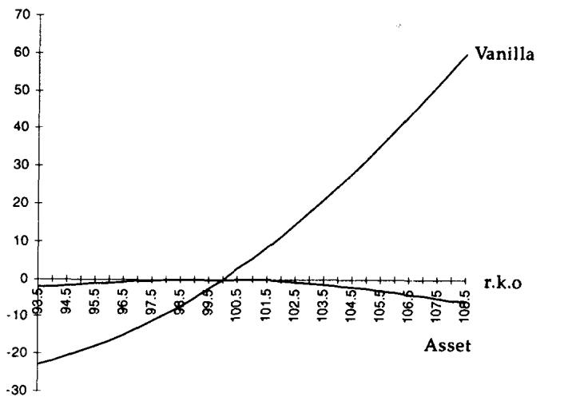
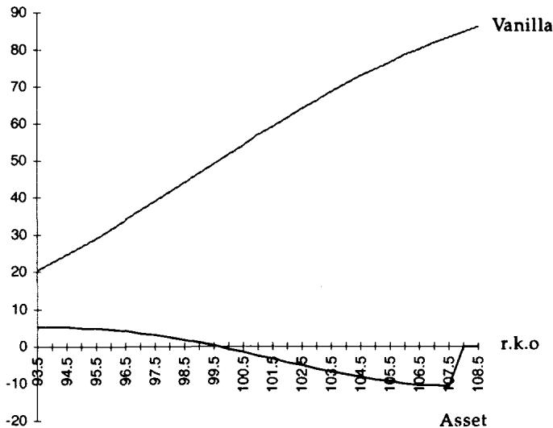
图 20.1、20.2 画的是一个 108 终止、还剩六个月的反向敲出。持有者呈轻微 short gamma，同时 short delta。
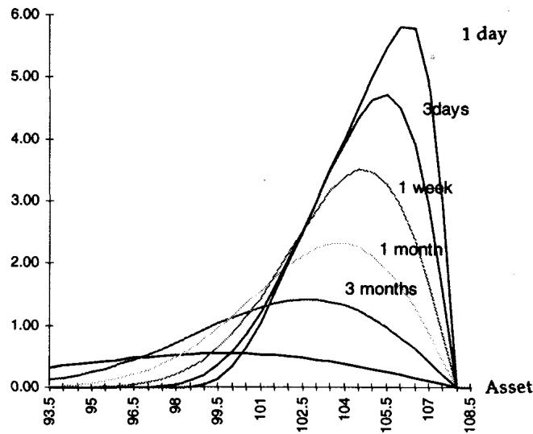
图 20.3 显示障碍附近时间的恶劣效果，与美式二元如出一辙。
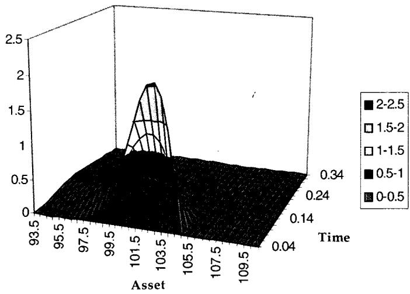
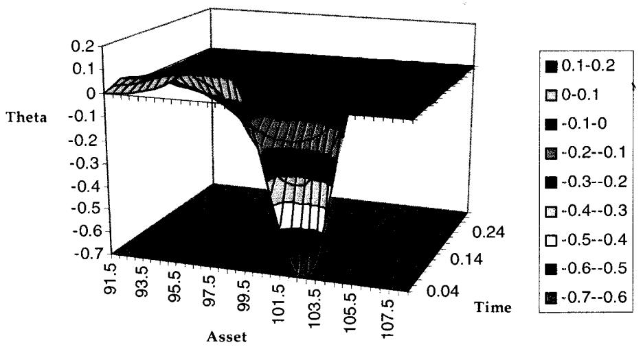
图 20.4 是反向 KO(100,105) 在不同波动率下的形态，图 20.5 是它与美式二元的区别：100 以下交易呈 short gamma，因此即便没有 carry 也能赚时间衰减。
theta 变号这件事，理论根在 BSM 关系 。反向敲出的 gamma 在生命周期不同区域变号，theta 必然跟着变号：short gamma 的区域 long theta（收租），long gamma 的区域 short theta（付租）。普通期权的 theta 符号是稳定的，反向障碍把这个稳定性也打破了。
二、案例研究：敲出盒子（The Knock-Out Box）
这是一笔真实交易（略作改动），发生在美元兑法国法郎上。
1990 年代美元对欧洲货币持续走弱，许多法国企业财务在投机头寸上深度被套。当时巴黎流行用购买力平价之类的理论唱多美元，于是这些"宏观经济学家交易员"在 5.60 法郎一线大举做多美元，比后来的价位高出约 12%。许多没有真正盯市纪律的企业，乐于扛着头寸而不设严格止损，但终归要在某一刻吞下子弹、认下亏损。
当法郎在 5.00 附近徘徊时，某衍生品行向他们兜售了下面这个把戏：给你一个"对冲"美元敞口的机会。
客户在 5.60 做多 1 亿美元，因 USD-FRF 现货已在 5.00，亏损约 1200 万美元。这副"江湖郎中的药"号称能让客户把钱赚回来：
客户买一个美元 5.60 敲出 put（即法郎 call），价格相对便宜，但它在 4.85（离现货不远）敲出，还有整整一年。成本很小，约头寸面值的 0.8%，即 80 万美元（含银行利润）。到期时若没被敲出，交易员就赚回 1200 万，因为他能在 5.60 重新做空美元、了结整件事，然后若愿意可以重新做一回美元多头。绝妙的交易，卖得像选举日的《世界报》一样好。
用 BSM 型估值（单一恒定波动率），这笔交易在 11.5% 波动率、6% 美国利率、7% 法国利率下值 0.63%。
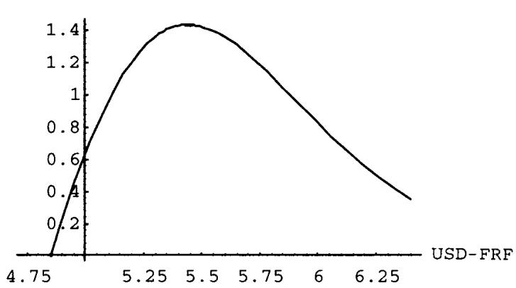
图 20.6 是这个 5.60 美元 put、4.85 敲出、一年期、11.5% 波动率结构的价值，按 1 亿美元交易的总权利金计。
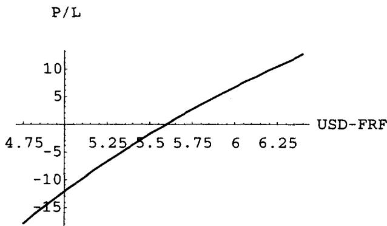
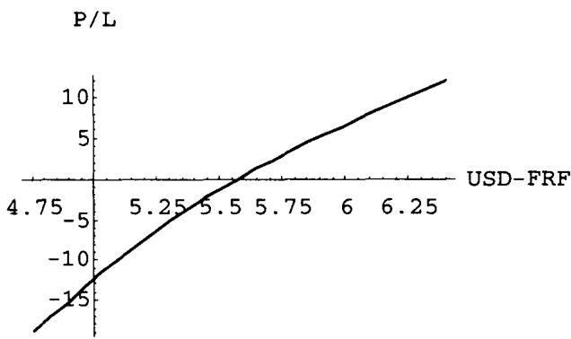
图 20.7 是不含救赎交易的初始头寸，图 20.8 是加上之后的头寸。沧海一粟而已。今天这笔交易帮不上这位倒霉的法国人什么忙，但明天也许有点希望：看图 20.8 到期附近的形态，整个组合（扣掉救赎交易的权利金）在 4.85 到 5.60 之间出现一个盈亏平衡区。
一些机构利用投资者缺乏概率论知识、截断利润分布来愚弄轻信的投资者。投资者在压力下尤其倾向于相信圣诞老人。
有个老把戏：利用客户的统计错觉。用分布的混淆去骗人最容易。比如 Covered Write（持股并卖出 call），让券商扼杀客户的上行、产生稳定佣金流。客户在 call 上亏钱，券商说你在股票上赚了；客户在股票上亏钱，券商说幸亏 call 的收入帮你减亏。等客户懂了点统计，游戏就升级到花哨的奇异期权 payoff，分布的混淆从此转移到"路径依赖"这个概念上。能活下来的华尔街公司，是那些迎合客户需求的。
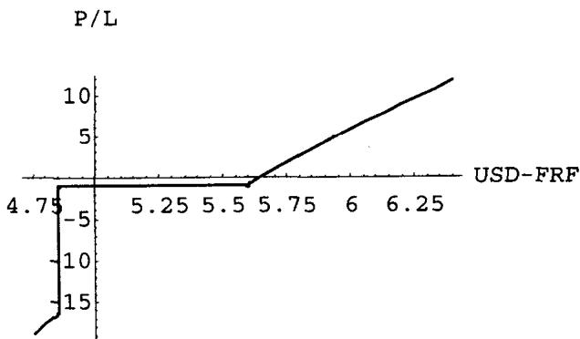
图 20.9 并不能改善客户的处境，但券商现在无论成败都有故事可讲。进一步分析揭穿了这副药为什么便宜：正因为它的首次穿越时间极短。整笔交易完全被障碍主导，5.60 put 还能保持"期权身份"的概率极低。随着时间推移，期权价值会上升，若市场（出于某种原因）变得静止，这结构看起来才像真正的保护，而这种事件在未来一年存活的概率无穷小。
理论映射：被到期 profile 欺骗
这一节是全章最值得我们用理论语言点透的地方。销售给客户看图 20.9、20.10，却不告诉他：这张图代表的不是普通期权那样的到期损益，而是"USD-FRF 全程从不跌破 4.850001 时"的损益。路径独立的到期损益与路径依赖的损益之间，有着天壤之别。
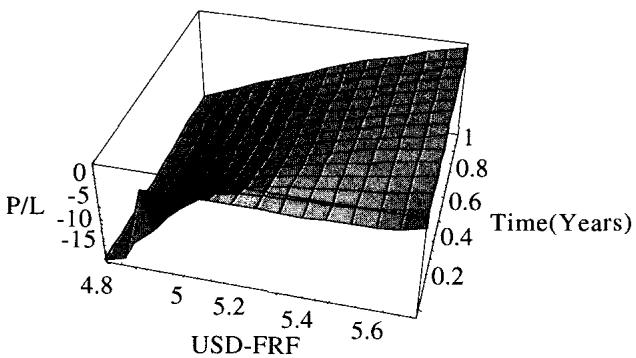
到期 profile 是把客户诱入"对卖方有利"的交易的好工具。人们的统计直觉本就薄弱，连普通风险图都看不准。看路径依赖的"到期"profile 时，客户意识不到他需要在心里对 payoff 概率做修正，当报告被做成一张静态 payoff 图、底部只附一行小字时，这种修正尤其难。
用我们的语言说：客户看到的那张盈亏平衡图，其值是
即条件于障碍从未被触及的终值损益。但反向障碍的首次穿越时间 极短， 接近零。无条件的期望损益
里那个示性函数 几乎总是零。客户被展示的是分子里那个零测度事件上的图景，却被默认当成整个分布。这就是"截断分布（truncating the distribution）"的精确含义：把赚钱的希望切掉，换来"可以永远重试这笔交易、直到某一年没碰到障碍为止"的幻觉。统计学家大概会估算出那一天在几百年之后。
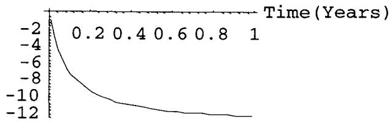
图 20.11 显示：只要 USD-FRF 完全冻结，这笔交易确实有正的时间衰减。问题在于"完全冻结"本身概率为零。
把交易做成零成本：客户亲手截断了自己的分布
客户过段时间可能回来抱怨这交易未必总管用，他们花 80 万（银行实际可能借 BSM 之名收到 100 万，把每一分高于 BSM 的钱都当利润）只是买了个蝶式。于是销售给出新花样：在"伟大救赎"之上再叠一个 covered write，让客户零成本（甚至小幅净收入）地把这交易一直做下去，直到遥远未来某天打平。
直接让客户卖 5.60 美元 call 收权利金有两个问题：客户可能自己拆解、自行交易而绕过银行利润；而且一旦 KO 端被敲出、裸露的 call 腿会阻碍结构续作。解法是把卖出的 call 也设成在 4.85 敲出。条款变成：
期限一年。客户买 5.60 美元 put KO 4.85，卖 5.60 美元 call KO 4.85，零权利金。若期末美元仍在 4.75 之上，客户拿回 1200 万亏损。
但若结构被敲出（美元跌破 4.85），交易员的全局头寸会亏得更多，这点衍生品行不会提。客户实际上被引导着截断了自己的分布：用"永远重试这笔交易、直到熬过整一年不碰障碍"的渺茫希望，换掉了任何真正赚回钱的可能。
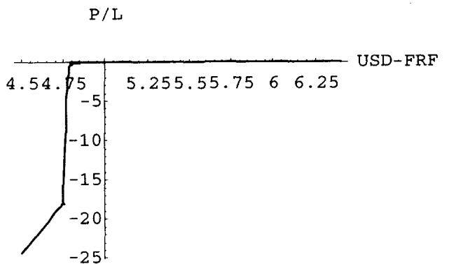
图 20.12 是整个组合的到期形态。它与图 20.9 的主要区别是：在 4.85 障碍之上，图 20.12 显示完美的盈亏平衡线。这条平线正是被截断分布的视觉签名。
三、对冲反向敲出：一个图解案例
反向敲出根本上难对冲。下面从卖方视角逐步对冲，并逐个检视希腊字母是否还可信。
交易员卖出 1 亿美元、一年期、5.60 美元 put（法郎 call），收 80 万，带 4.85 敲出，离市场仅 3%。
Delta：从正翻负
操作者 short call，但没经验的交易员会惊讶地看到 delta 从正翻到负。原因是：靠近障碍时期权结构衰弱、被赌注主导，市场逼近障碍时交易变便宜；而在另一端（高位），交易又因为像一个上涨中的 long put 而变便宜。两极之间，交易令人困惑。
delta 以面值百分比表示（按美元而非货币计）。
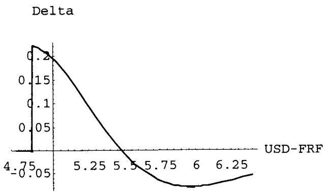
图 20.13 显示结构 delta 的变化，能看到在 4.75 障碍价处从悬崖跌落。
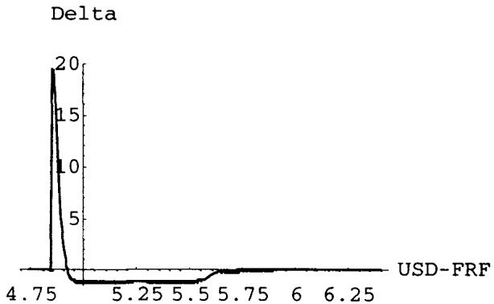
随着时间逼近，delta 会跳动起来。看还剩一天时（图 20.14）：到期前一天 delta 达到 2000 的量级，对 1 亿美元头寸意味着惊人的实际 delta。对美元基准的人，头寸面值其实更大：它相当于在 5.6 处 short 等值 1 亿法郎即 5.6 亿法郎，按两国悖论是恒定的法郎，但在 4.85 处会变成 亿美元。于是 2000 个 delta 就是 亿美元。同时期权的内在价值会值 1550 万美元，相对一年前卖出价 60 万到 80 万，是惊人的时间衰减。
这里 delta 突破常规量级、内在价值暴涨，本质是反向障碍在临近到期、临近障碍时退化为美式二元的体现：数字期权在障碍邻域的 delta 趋于 Dirac，价值集中爆发。
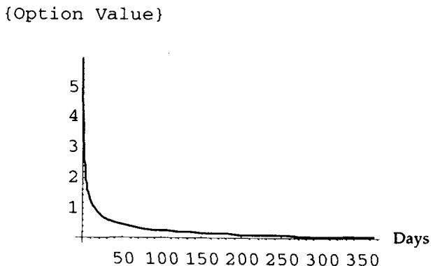
图 20.15 显示时间流逝带来期权价值的加速变化。在交易里，加速意味着不稳定。这种不稳定在障碍处加剧，前提是结构在到期前没被敲出。所以这个最凶恶的情景，恰恰也是最不可能的：市场整整一年待在障碍附近却不触碰，机会极小。
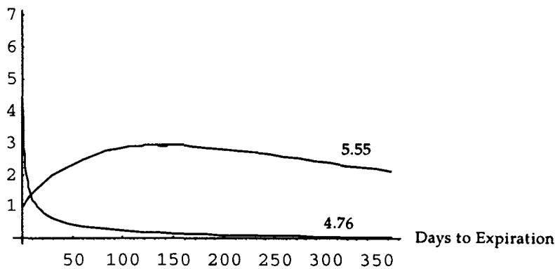
图 20.16 给出两个情景：靠近障碍的 4.76 与远离障碍的 5.55。在 4.76，交易对卖方呈折磨人的负时间衰减；在 5.55，交易正向衰减。交易员执行 delta：他卖了 KO put，因此 long 美元（short 法郎），于是按美元价值的 19% 卖美元买法郎（5.00 处美元价值 百万，19% 即 2120 万）。
显微镜与望远镜：局部与全局的背离
图 20.17 到 20.23 在动态对冲下检视各种风险。前几张假设 delta 中性，后几张在 delta 中性外再加 vega 中性。由于希腊字母的局部行为与全局行为不同，图既用"显微镜"（小幅参数变化的局部敏感性）也用"望远镜"（大幅变化）来看。
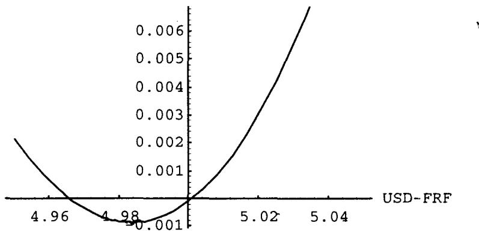
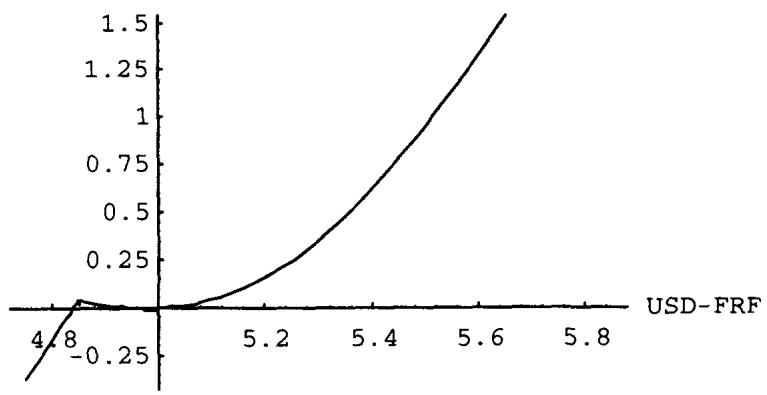
图 20.17 在 USD-FRF 5.00 邻域的显微镜下，损益呈简单 long gamma 的 "V" 形。图 20.18 放大尺度后，障碍处出现一个跳变，揭示出在障碍处必须清掉 delta 对冲——这正是管理障碍期权的难点之一。
Gamma 与 Vega：不可信赖的度量
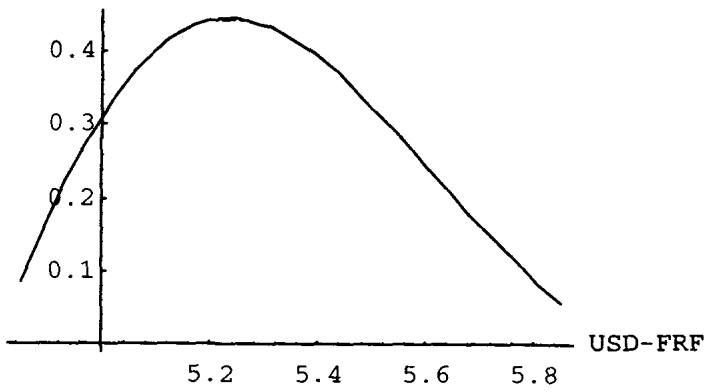
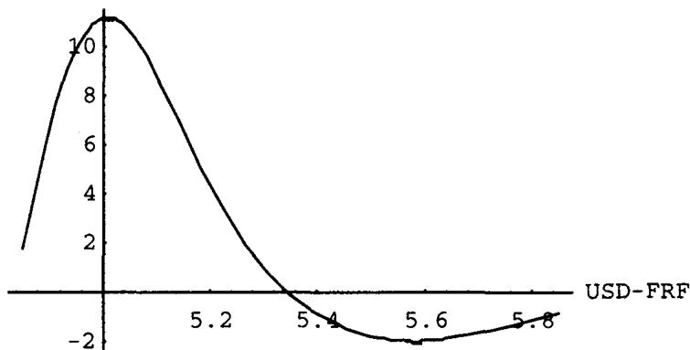
图 20.19 显示令人不安的 gamma，它集中在 5.30 USD-FRF 邻域。图 20.20 显示到期前五周，gamma 峰值移到靠近障碍处，并在 5.35 邻域变负。图 20.19 与 20.20 的差异，正是交易员害怕反向敲出的原因：它的任何特征都靠不住，维持不了多久。
在看 vega 对冲前，先看度量的稳定性。
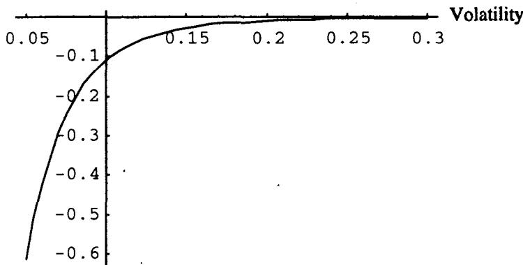
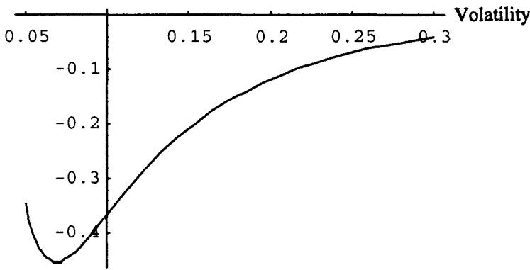
图 20.21、20.22 是当前现货下、分别还剩一年与一个月的 vega 敏感性。可以注意到，障碍邻域的 vega 及 vega 凸性都随到期时间增加而增大。vega 符号为负：持有者 short vega，卖出期权的交易员要卖 vega 来对冲一个 long volatility 头寸。
看即时移动的 gamma 表，交易员注意到 gamma 在 5.30 附近见顶，vega 也在那里见顶（单一期权的 gamma 与 vega 在同一水平见顶）。于是他卖一个在该水平见顶的期权：选一个执行价约 5.30、三个月的期权，得到 vega 中性头寸。
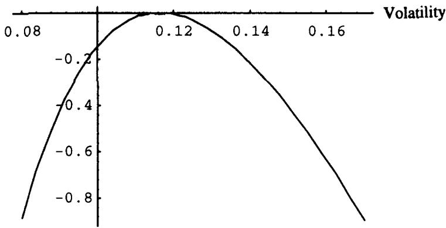
图 20.23 是 vega 组合的图，显示 vega 中性对下一步移动极其短暂。交易员处在一个不愉快的境地：波动率下降时头寸 vega 增加，上涨时 vega 减少，这意味着 vega 中性必输。
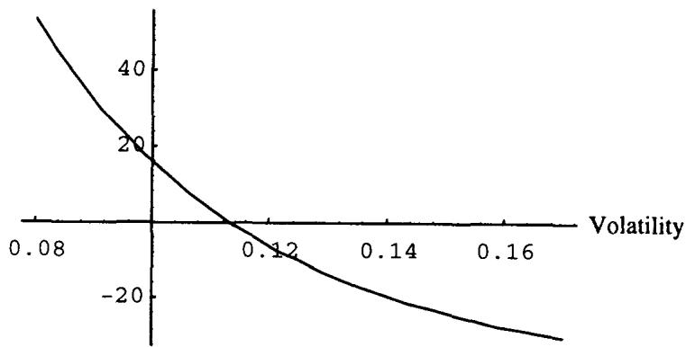
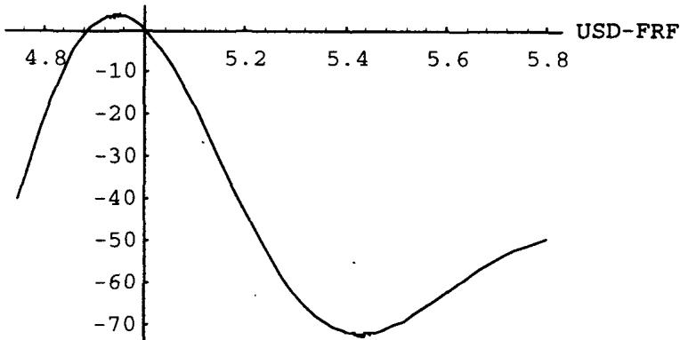
图 20.24 是结构未对冲时跨现货、跨波动率的 vega。把它与图 20.23 对比，未对冲反而更有利——也许压根不该卖那三个月期权做对冲。图 20.25 显示对冲后的敞口随汇率移动的变化，说明不只波动率变化会扰动 vega，现货移动同样会。
案例的结论很 Taleb：也许这笔交易压根就该不做 vega 对冲。
作为交易员，作者宁愿要一笔大致未对冲的危险交易，也不要一笔精确地对冲错了的交易。
这句话点出反向障碍对冲的核心困境：希腊字母在障碍附近极不稳定，gamma、vega 会变号、会随时间漂移峰值位置，用一个静态期权去匹配某一时刻的 vega，下一刻就脱钩，还引入新的不稳定。度量本身不可信时，精确对冲反而把一个已知的脏风险换成一个未知的脏风险。
四、双障碍期权
双障碍期权在两个障碍中任一个被触及时到期。单资产（一维）期权只能有两个障碍，一个高于市场、一个低于市场；多维期权的障碍数最多是维数的两倍。
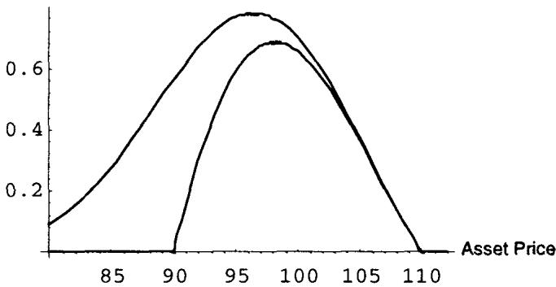
图 20.26 对比双障碍与单障碍：都是一年期、执行价 100 的 call，单障碍上敲出价 110，双障碍上敲出 110、下敲出 90。
关于双障碍的基本规则：
- 通常首次穿越时间极短，底层期权的特征几乎无关紧要。好的情况下，结构看起来像反向敲出；坏的情况下，它仿佛随时想立刻到期。
- 因此研究它们的最佳方式是检视美式双向赌注（American double bets）。
这条规则的理论含义是：双障碍把存活区间夹在两条边界之间， 的期望值被两侧障碍同时压缩，比单障碍更短。当首次穿越时间趋于零，底层香草的 gamma、vega 全被冲掉，剩下的纯粹是"在区间内存活多久"这个赌注，所以用美式双向数字期权去近似最贴切。
返利（Rebate）
返利是一个简单的美式二元期权，在障碍终止时支付一笔确定金额。带返利的敲出期权 = 直接敲出 + 同 strike 的美式赌注。
设一个执行价 100、敲出触发 109 的反向敲出 call 在终止时支付 9。结构是简单可加的：
即一个 100 call / 109 敲出，加一个面值 9 的赌注——只要 109 在存续期内任一刻被触及，赌注就支付 9。返利把"障碍处不连续"显式地货币化成一个数字期权 payoff，这与第 19 章"障碍滑点补偿 = 美式二元价值"的逻辑一脉相承。
练习：加入敲入
读者可作为练习，用常规敲出与常规敲入对比的方法，对敲入期权重做上述研究。由互补恒等式，敲入的分析可由香草减去敲出平移得到。
五、各类障碍变体
替代障碍期权（Alternative / Outbarrier Options）
替代障碍期权也叫 outbarrier，同时属于路径依赖族和相关性族：期权写在一个资产上，障碍却挂在另一个资产上。典型例子是 SCUD（second currency underlying），写在某资产上、障碍挂在汇率上的期权，比如带美元-马克障碍的德国马克 cap，或带低位美元-日元敲出的日经指数 put。
SCUD 的逻辑是：当资产以某种方式移动、单靠汇率就已产生利润时，客户不再需要期权保护。例如一只美元基金做多日本股票，美元走低、日元走强本身就足以产生利润；他买一个针对日本市场不利移动的保护，并设定它在货币升值时终止，一旦终止就整体平仓获利。再如美国投资者借短期马克并滚动续借，他买一个利率 cap 但设定马克贬值时敲出——被敲出时，他可以低价买回马克满足债务并获利。
关键交易要点：
- 资产间的相关性让替代障碍像常规障碍；独立则让障碍退化成对另一个期权的赌注。
- 结构最终有两个相关的 delta：一个对资产 A 为正，另一个在障碍的对侧、对挂障碍的资产 B（见第 22 章多资产期权）。
理论上，outbarrier 是路径依赖与相关性的交叉：定价需要二维扩散下对"A 的 payoff 条件于 B 不触障"的期望，相关系数 把两个维度耦合起来。 时 B 的路径几乎由 A 决定，结构回到单资产障碍； 时 B 的触障与 A 独立，障碍部分变成纯粹乘在期权上的存活概率。
爆炸期权（Exploding Option）
爆炸期权在起始到到期之间某个价格被触及时支付一笔确定金额，此时称它"爆炸"。设标的在 100，一个"在 107 爆炸"的 102 call 在 107 被触及时支付 5 点。它替代了 call spread 或 put spread：持有者可以不必承担交易成本就锁定利润。缺点是若持有者在到期前改变主意，平仓的价差成本会高于普通期权。
爆炸期权等价于一个带返利的反向敲出，返利等于期权终止时的爆炸 payoff。
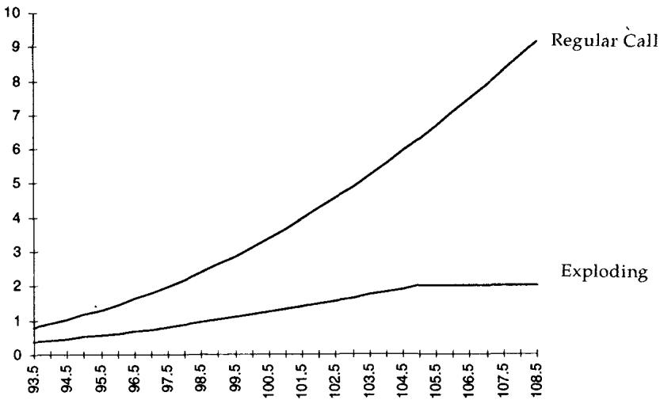
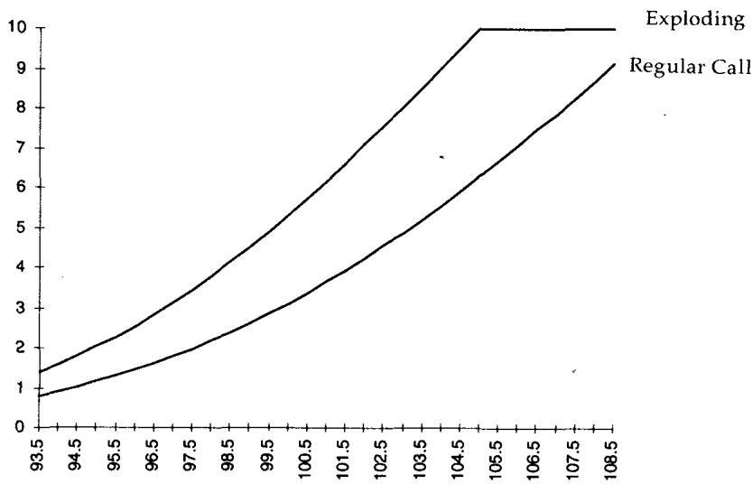
图 20.27、20.28 比较普通 call（执行 100）与爆炸期权（执行 100、105 终止）：图 20.27 终止 payoff 为 2，图 20.28 为 10。payoff 越大，结构越像纯赌注。
上限指数期权（Capped Index Option, CAPs）
CAPs 最好被描述为一个反向敲出，终止时支付等于"执行价与敲出价之差"的返利，看起来像一个 payoff 等于两个执行价之差的 call/put spread。一个关键复杂性是：与多数"触及即触发"的敲出不同，CAPs（在某些情形）需要**结算价（settlement price）**达到或穿过第二个执行价才终止。
CAPs 与爆炸期权的区别就在这里：CAPs 只在资产的官方收盘价终止，爆炸期权则通常随时可被敲出（即"爆炸"）。如第 18 章所述，按结算（at-settlement）的期权像美式二元那样行为（单调 long 或 short vega），只有临近到期日才变回欧式、呈现混合 gamma 特征。
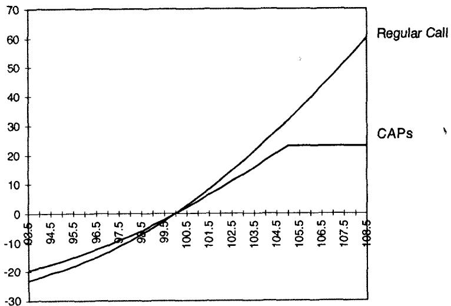
图 20.29 比较 CAPs 100-105（即 100/105 上限 call spread）与执行 100 的普通 call，市场在 100。CAP 初始买价 2.72，普通 call 为 3.11，波动率 15.7% 年化。
CAPs 难交易，因为它只在标的穿过结算价时终止，不管交易日内发生什么。这个特性对不做对冲的用户似乎无足轻重，对对冲者却带来重大风险或重大机会。在传统障碍里，交易员清楚何时清掉对冲；做市商 short CAP 并持有对冲标的时，会在 CAP 价格附近挂单。普通障碍下他在接近敲出价处清掉对冲；CAPs 下他不知道确切价格——这种不确定反而能带来机会。
以 100/105 CAPs 为例：交易员 short 1 亿、long 4800 万标的。在 105 敲出价，做市商的 delta 从 48% 瞬间变零。但若这发生在交易日内，他不知道是否要靠卖回 4800 万全额回补。他可以先卖一部分，观察市场是否走高——若信心增强相信结构会终止，就在更高价卖出余量；若市场掉头向下穿越障碍，他能以盈利买回对冲，并期待重复操作。所以在这例子里，交易员手里握着一个无价的期权。
CAPs 的"结算价触发"把一个连续监测的障碍变成了离散监测，理论上这降低了触障概率（连续上确界 收盘值），也把做市商在盘中的不确定性变成了一个真实的择时期权——这正是污染原理的又一处体现：规则的细节凭空生出 optionality。
六、触发的合法性与价格操纵
障碍是否被合法触发，操作者之间常有分歧。持有被对手方判定为已终止的敲出期权的交易员，希望看到清晰证据表明市场确实在那里成交、没有操纵。
在流动性差的 OTC 市场里操纵是可能的（有人说是大概率的）。上市交易所有防止两个交易员以虚构价格成交的程序：成交价不能低于现有买价或高于现有卖价。OTC 没有集中场所，无此保护。这迫使银行与交易商订立繁复合约，规定障碍触发须有"多于一个独立场所"（多于一个经纪商）的成交证明。
一些机构对这种条款不满，认为"触及即触发（market if touched）"更可取：战斗正酣时，若操作者要等着收集成交次数和价位的信息，根本无法判断期权是否被敲出。操作者需要确定性，立即知道自己是否被敲出至关重要，等待证明可能代价高昂，因为信息滞后造成滑点。
最佳解法是：要求 short 敲出（或 long 敲入）的银行向一组双方都认可的第三方留置止损单。这样 long the barrier 的一方（即需要逆市场移动方向挂止损单、而非挂限价单的一方）可以用一张成交确认单来证明障碍被触发。
委内瑞拉 par bond 是著名案例：一家持有敲入 put 的公司据称大举买入债券以满足触发条件，而 short put 的一方留下巨量卖单阻止价格穿越。一次闪烁的屏幕更新让一方认为敲入、对手方却不这么认为。异常的成交量和少数玩家的集中度惊动了 SEC。
教训是：在流动性差的市场，障碍期权的卖方（即从触发中受益、因而留置止损单的一方）能用足够小、值得操纵的量轻易操纵市场。障碍处的 payoff 大到让尝试触发的风险相比之下微不足道。
按污染原理，这无异于一个免费期权。
类似情形也出现在现金结算期权上：到期前几分钟的少量买入能带来巨额利润，且没有平仓滑点的惩罚。
在流动性差的市场，永远不要卷入敲出期权，除非能就流动性洞的风险获得适当补偿。
这个案例说明：结构的持有者若做动态对冲反而处于劣势。把它翻译成理论：障碍处的 payoff 不连续创造了一个内生的操纵激励，触发障碍的边际成本（买卖少量标的的滑点）远小于触发带来的边际收益（大额数字 payoff），这是一个被市场结构制造出来的、对 long-the-barrier 一方有利的"免费期权"。流动性洞在这里是这种激励的均衡结果，而非偶发意外。
七、读一张风险管理报告
本节用一张标准风险报告把前面的概念收束起来，包含：希腊字母如何向风险经理披露、常规风险系统如何（错误）处理它们、障碍处的 pin risk、以及通过 gap 报告区分"埋雷市场"与"清空市场"。
Taleb 主张整体式（holistic）风险管理：把同一标的上所有头寸汇总到一张报告，因为如今几乎没有机构的头寸不含障碍。风险经理通过场景分析报告窥见头寸风险，主报告是现货敏感性，刻画资产价格变化带来的损益风险。有些机构生成"影子（shadow）"报告（显示第 8 章定义的影子 gamma），有些不幸只用直报告。直接期权头寸的报告好读，因为不需对交易员的潜在动作做假设；障碍期权则要求经理考虑触及执行价时的对冲执行风险。
设定：Syldavia 货币（SYD）兑美元 1.00（报告按惯例显示 100）。交易员库存里只有一个头寸：short 1 亿美元等值、三个月、执行价 105.00、带 97.00 敲出的 SYD call（USD put）。
报告字段含义：变量为现货（只变现货、不变其他参数，是"直 gamma"敏感性）；Pair 是关注的货币对；P/L cur 是计算损益的货币（须用 numeraire 货币，delta 用对手货币表示，对应两国悖论）；日期是损益演化的区间。
两张报告：止损 OFF 与 ON
Taleb 给了两张报告：图 20.30 不考虑障碍头寸的清算（Barrier 止损 OFF），图 20.31 考虑（Barrier 止损 ON）。为简单起见，头寸只含一个 delta 中性头寸，处在平漂移、平波动率期限结构的环境。
下面是两张报告关键行的对比（数值取自原文，单位千）。注意障碍 97.00 处：
| Spot | P&L | Delta（止损OFF） | Gamma（OFF） | Delta（止损ON） | Gamma（ON） |
|---|---|---|---|---|---|
| 100.00 | — | (390) | (2,520) | (390) | (2,520) |
| 98.00 | (306) | 2,940 | (960) | 2,940 | (960) |
| 97.25 | (545) | 3,360 | (360) | 3,360 | (360) |
| 97.00 | (630) | 35,000 | Error!!! | 0 | Error!! |
| 96.75 | (1,505) | 35,000 | — | (630) | 0 |
| 96.00 | (4,129) | 35,000 | — | (630) | 0 |
| 94.50 | (9,379) | 35,000 | — | (630) | 0 |
两张报告在 97.00 之上完全相同。差别在障碍下方：止损 OFF 时，系统假设交易员没有在障碍处平掉对冲，于是残留 35,000 的 delta 一路裸露，损益随现货继续恶化（94.50 处亏 9,379）；止损 ON 时，系统假设交易员在 97.00 用止损单清掉了 35,000 SYD 的对冲，障碍下方 delta 归零、损益冻结在 (630)。
障碍处 gamma 发散成 Dirac
这张表最值得我们用理论点透的是 97.00 那一行的 Error!!!。障碍处 delta 从 3,360 跳到 35,000（或归零），是一个有限跳变；gamma 作为 delta 对现货的导数，在不连续点上是一个 Dirac delta 函数（ 分布），数值上发散，所以系统报错。这正是第 19 章"障碍处 delta 不连续"在风险系统里的具体后果：
常规期权的 gamma 是有界的连续函数，障碍期权在障碍处的 gamma 是一个测度而非函数，任何用有限差分算 gamma 的系统都会在那里崩掉。
报告字段的几个要点
- Audited ON：报告来自受控制方审计的数据库，只读，交易员（理论上）不能藏头寸。
- Barrier: Analytic：障碍用简单闭式解定价，不用更复杂的工具。
- American: Cox-Ross：美式期权用二项模型；Iterations 90 O/E 指树有 90 步，并在奇偶步间翻转作为精度优化技巧。
- Barrier ON/OFF：核心所在。Report 2（ON）假设交易员有止损单在障碍处清掉对冲（此处 97.00 处 3500 万 SYD）。若止损触发，交易员有合约要求的成交证明、了结期权，风险经理因此关心止损后的剩余头寸。
但事情没那么简单：若障碍止损没在理想价位执行呢？有第 4 章定义的滑点，更有严重的 gap 风险——市场跳空穿越障碍，在低于 97.00 处清算，每低一个点要花 350 万美元执行成本。外汇虽是 24 小时交易，但有周末跳空风险，还有政治公告（Syldavia 国王心血管出问题的消息打上屏幕）造成的突然跳空。
许多风险经理建议把止损放在官方敲出触发之前（略高于下障碍、略低于上障碍）。Taleb 说这是坏主意：若障碍最终没被触及，这会制造一个负 gamma（交易员防守障碍时常说的"反弹 bounce"现象）。
报告上必须清楚区分"合约上路径依赖"的头寸（障碍）与"因动态对冲而路径依赖"的证券（香草期权）。
不把已触发的障碍从风险报告中剔除，银行会被风险噎住、无法交易。与常规 short gamma 不同，障碍是一次性命中，不是永久危险：若交易员按止损卖掉 350 万 SYD，成交确认就是敲出证明，之后无论市场涨跌，头寸都不复存在。最佳方案是用 Report 2（止损 ON）加一张展示潜在执行风险的 gap 报告。这也解释了动态对冲者为何总要费劲向老板解释损益波动——"我以为你对冲了"是不懂产品的管理者的回答，最好的解药就是 gap 风险报告。
报告列的简要解释
- P&L：从原点（Center 100）起的利润，假设无影子 gamma、无波动率变化。要算影子 gamma 的损益，需对移动条件下的波动率行为做假设：若交易员认为 102 处波动率会高一个点（极安全的假设），而他 short modified vega 每点 13.9 万，则 102 处损益为 。
- Gamma：常规，只是在障碍处爆成 Dirac，报告显示错误号。
- Modified vega（按惯例以 100 而非 1000 表示）：假设曲线移动按三个月等价加权。因为模型用解析模型而非 Dupire-Derman-Kani，对障碍的修正不会很精确，因为障碍对整条曲线起反应。
- Rhod / Rhof：Rhod 是 numeraire 货币平行移动的敞口，Rhof 是对手货币的。两者都未加权（极糟的做法）。Rhod 高于 Rhof，因为它含权利金 carry 的敞口。
八、跳空与跳空报告：埋雷市场
跳空报告量化 gap delta 的潜在执行风险，即结构终止时需要在止损上卸掉的那些 delta。这些是一次性滑点成本。
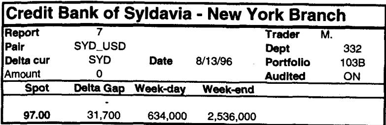
图 20.32 的跳空报告：第二列是 97.00 处需卖出的 delta 量。Syldavia 信用银行的系统估计工作日的 gap 风险为 63.4 万（第三列），对应 0.20 的跳空（订单平均在 96.80 成交的风险）；市场周末跳空时是三倍（第四列）。
gap 风险的量级是期权数量的函数，与组合久期或停止时间无关。
这条规则值得停一下：常规 short gamma 的风险随时间、随波动率持续累积，gap 风险却只取决于障碍处那一跳的 delta 量。它是结构性的、一次性的，不随久期缩放。
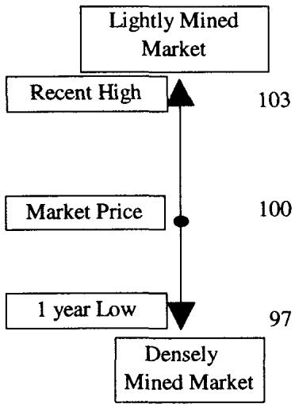
市场有个倾向：在高波动率时段之后，会清扫掉某个价格区间里堆积的止损单，这往往对波动率有严重影响。由此引出"埋雷市场（mined market）"的概念。
埋雷市场是布满敲出、敲入 gap-delta 订单的市场，因而会在这些价位附近经历高度的"抽打（whipping）"和均值回复波动率。**清空市场（cleared market）**则没有这类订单。随着障碍期权的未平仓量累积，操作者的 gap 订单也累积。交易员监测近期高低点（比如一个月），当这个差距连续几周保持狭窄时，可以预期低点之下、高点之上会堆积 gap delta 订单。一旦市场进入"埋雷"区，一连串流动性洞被触发，市场随之清空。这个现象叫"浮木效应（driftwood effect）"——所有障碍期权订单被推到近期高低区间之外（图 20.33）。
当风险经理有足够信息判断 gap delta 所处的水平位于一个密集埋雷的市场区间时，需要上调 gap delta 的预期滑点成本。
理论上，埋雷市场是障碍订单的内生聚集造成的局部价格动力学畸变。大量止损单聚在相近价位，意味着价格一旦触及就会引发连锁的同向交易（止损卖单触发更多下跌、触发更多止损），这是一种正反馈，表现为局部的高波动与跳空。这与第 6 章的均值回复、第 15 章的分布警告呼应：障碍期权的真实风险不在 BSM 假设的连续、独立增量里，而在这些被订单结构扭曲的、有记忆的局部路径里。
九、本章综述：理论与实务的对照
| Taleb 的实务命题 | 对应的理论命题 |
|---|---|
| 反向障碍在障碍附近像高赔付美式二元，不像期权 | payoff = 深度实值期权 ≈ 数字期权；时间价值少 |
| 反向敲出 call 可有负 delta | 触障的实值损失概率压过内在价值增加， |
| 反向敲出 theta 会变号、可负向衰减 | ，gamma 变号 ⇒ theta 变号 |
| 到期 profile 骗人：盈亏平衡区其实是条件事件 | 路径条件损益 ，而 |
| 客户"截断分布" | 用零测度事件上的图景替代无条件期望 |
| 反向敲出便宜，因首次穿越时间极短 | 障碍主导 ⇒ 极小 ⇒ 期权身份概率低 |
| 反向障碍希腊字母不可信、精确对冲反受害 | gamma/vega 随时间变号、峰值漂移；静态对冲久期失配 |
| 双障碍首次穿越更短，研究用美式双向赌注 | 被双侧压缩 |
| 带返利敲出 = 敲出 + 美式赌注 | payoff 可加分解，数字期权显式化障碍跳变 |
| 替代障碍（SCUD）：相关性决定它像障碍还是像赌注 | 二维扩散下条件期望， 退化单资产、 解耦 |
| 爆炸期权 = 带返利的反向敲出 | 触障即付固定 payoff |
| CAPs 按结算价触发，给做市商一个择时期权 | 离散监测降低触障概率；规则细节生出 optionality |
| 障碍处 gamma 报错 | delta 不连续 ⇒ ，是测度非函数 |
| 流动性差市场可操纵障碍 = 免费期权 | 触发边际成本 << 障碍 payoff；污染原理 |
| 埋雷市场、浮木效应 | 障碍订单聚集 ⇒ 局部正反馈、跳空与均值回复 |
核心观点
第一，反向障碍是披着期权外衣的赌注。它在障碍附近的全部行为——负 delta、变号 theta、发散 gamma——都该从"高赔付美式二元"这个原型去理解，而非从香草期权。
第二，路径依赖让到期损益图变成误导工具。客户看到的盈亏平衡区是一个条件于"从未触障"的零测度事件，而反向障碍的首次穿越时间极短，使这个条件几乎永不成立。理解这一点，就理解了 Taleb 对结构产品销售的全部批判。
第三，度量不稳定时，精确对冲是把已知的脏风险换成未知的脏风险。反向障碍的 gamma、vega 会变号、会漂移峰值，用静态期权做 vega 中性下一刻就脱钩。Taleb 宁要大致未对冲的危险交易，也不要精确对冲错的交易。
第四，障碍处的不连续在风险系统里表现为 Dirac 发散，在市场里表现为可操纵的免费期权和埋雷市场。gap 报告、止损 ON 的报告、影子 gamma，都是为了让这种一次性、结构性的风险可见。
面对一张反向/双障碍结构的操作清单
- 它在障碍处是丢内在价值还是连续归零？是常规还是反向？（决定它更像期权还是更像数字赌注）
- 它的首次穿越时间有多短？障碍是否完全主导了底层香草？
- delta 会不会变负、theta 会不会变号？我看到的 gamma/vega 峰值会随时间漂移到哪里？
- 客户被展示的"到期 profile"是无条件损益，还是条件于不触障的损益？ 有多小？
- 障碍处的 gap delta 有多大？滑点和周末跳空成本是多少？这是不是一次性风险？
- 这个障碍是触及即触发还是按结算价触发？合约的触发证明条款是什么？
- 市场是否埋雷？近期高低点是否长期狭窄、堆积了大量 gap 订单？
- 在流动性差的市场，我是否就障碍处的流动性洞和被操纵风险拿到了足够补偿？
一句话收束
反向与双障碍最该记住的一句：它名义价值低、看起来便宜，是因为它几乎注定被障碍吞掉；你真正卖出或买入的是一个写在不连续边界上、由首次穿越时间和障碍处流动性决定生死的赌注，而非一张普通期权——所有让香草可对冲的希腊字母，在这里都会变号、发散或失效。